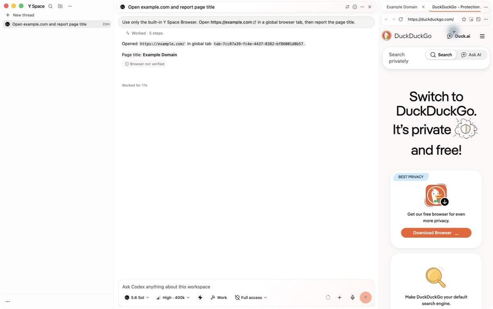
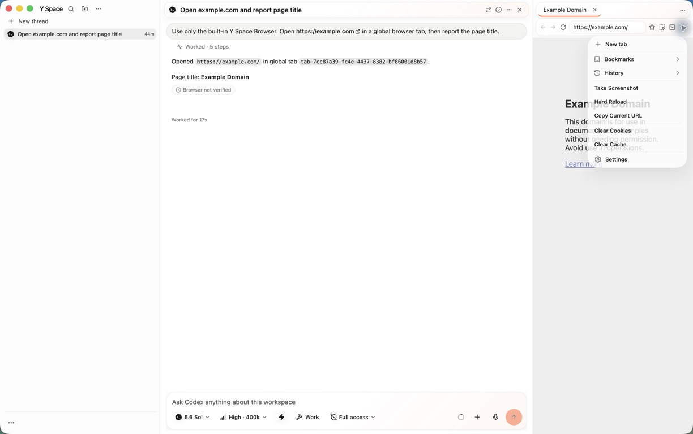
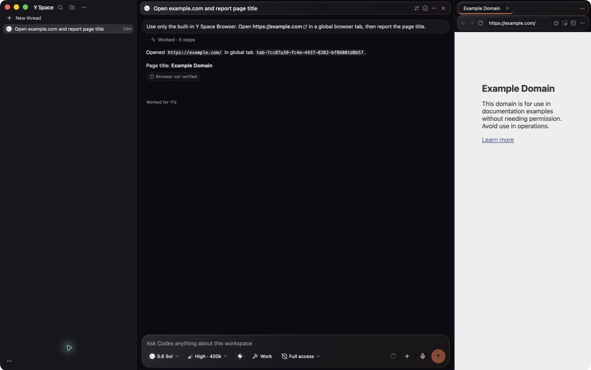
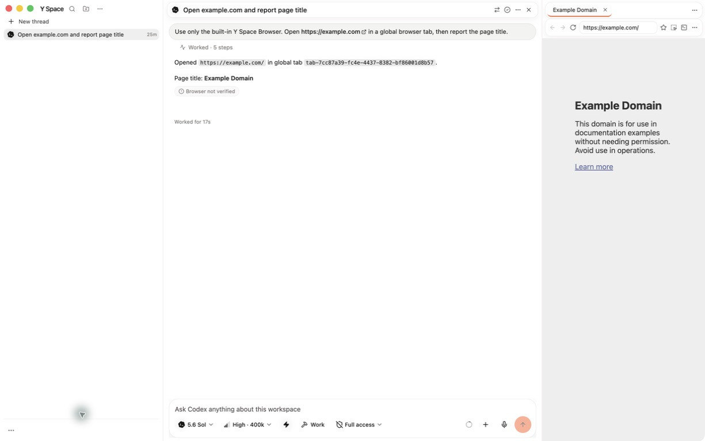
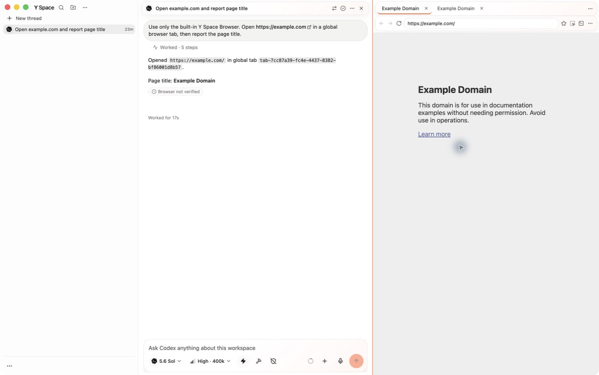
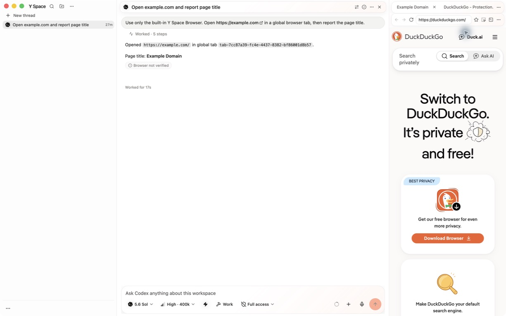

Modern glass, without turning Y Space into glass soup.
The final unsigned desktop package keeps content crisp and square while giving the sidebar, one global tab rail, thread header, Browser controls, and composer a lighter, warmer, Apple/Codex-style sense of material.
Fast answer
What changed
One bounded glass capsule for global tabs, a softer 20px composer, calmer faux-glass headers, and visibly lighter native sidebar frosting.
What stayed crisp
Transcript, Browser pages, webviews, document planes, pane boundaries, drag handles, and individual tabs never receive a blur layer.
Verdict
The packaged ARM64 build passed light, dark, reduced-transparency, global-tab, embedded-navigation, resize, close, and residency checks.
Implementation
Stable real glass
.poracode-glass-chrome owns the shared border, surface, specular wash,
radius, blur, and shadow. Only the global strip and composer opt in.
Faux glass where it matters
Thread and Browser toolbars use paint-only gradients, theme-aware edge tokens, and shallow elevation. Browser content remains a normal opaque plane.
Platform-aware sidebar
macOS light defaults to 90% with an 88% floor; Windows uses 94% / 92%. Dark defaults remain 82% / 88%, now selectable with a 1% slider step.
Accessibility first
Reduced transparency now has enough selector priority to beat the later composer rule. Dark highlights use restrained theme tokens instead of light-mode white edges.
One tab concept
Every Browser remains a peer global workspace tab. The strip is one glass surface; tabs keep one orange selected indicator and do not create per-tab compositor layers.
Catalog cleanup
The renderer catalog was extracted and completed at 3,281 messages with zero missing entries across all 12 translated locales.
Pass criteria
| ID | Result | Evidence |
|---|---|---|
| PC-68 | Met | Final light package shows the white/orange Y Space shell with restrained material depth. |
| PC-69 | Met | One rounded global rail; eight-browser peak retained one strip and one selected peer. |
| PC-70 | Met | 20px composer, specular wash, diffuse elevation, orange focus edge, unchanged controls. |
| PC-71 | Met | 90% macOS light / 82% dark verified in the packaged Appearance screen; platform floors are tested. |
| PC-72 | Met | Faux-glass header and Browser toolbar markers; CSS test rejects filters on content planes and webviews. |
| PC-73 | Met | macOS Reduce transparency visibly produced opaque chrome; the original system setting was restored. |
| PC-74 | Met | Tab create/switch/close, omnibox navigation, Browser menu, and split resize were clicked in the package. |
| PC-75 | Met* | Unsigned ARM64 package, screenshots, dark/reduced regression, and six-guest residency ceiling passed; the one-cycle RSS trend is explicitly inconclusive. |
Automated verification
Green checks
- Full Node 24 suite: 912 files passed, 5 skipped; 10,349 tests passed, 85 skipped.
- Focused glass pass: 10 files / 127 tests; review regression: 1 file / 11 tests.
- Typecheck, lint, type-aware lint, formatting, diff check, and JSON validation passed.
- Production renderer/main build and unsigned ARM64 packaging passed.
- Deep/strict ad-hoc code-sign verification passed.
New regression coverage
- Platform frosting defaults, floors, and exact 82% slider selection.
- Shared glass marker, bounded radius, surface, blur, and theme-aware shadows.
- Reduced-transparency cascade priority over the composer rule.
- Browser/thread content-plane markers and no-blur selector boundaries.
- One tablist, selected-state semantics, and global capsule geometry.
Packaged end-to-end QA
| Case | Status | What was clicked and observed |
|---|---|---|
| YS-GLASS-E2E-001 | Pass | Light shell, 90% sidebar, focused composer, Browser toolbar, and complete Browser menu. |
| YS-GLASS-E2E-002 | Pass* | Created a peer Browser tab, navigated to example.org, switched with mouse and keyboard, resized, and closed only the disposable peer. Native drag synthesis is documented below. |
| YS-GLASS-E2E-003 | Pass* | Dark 82%, macOS reduced transparency, eight global Browser tabs, six resident guests, and cleanup to one guest. One-cycle RSS comparison is inconclusive. |
Visual evidence

{kind=link}

{kind=link}

{kind=link}

{kind=link}

{kind=link}

{kind=link}

Open the cards
Review findings and fixes
Decisions and assumptions
- Real blur is reserved for small, stable shell chrome; faux glass is used on normal-flow pane headers.
- Structural pane edges stay square so the desktop remains precise rather than becoming a stack of floating cards.
- Explicit saved frosting values are preserved; only reset/default behavior adopts the new platform values.
- No new pull request was created because this follow-up asked for a visual iteration, not PR delivery.